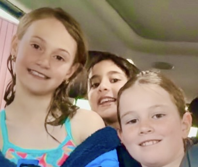

Hello, we are the Girls Club owners, Maddie Pike, Nur Ali, and Harper Kelly.

Maddie is the CEO and founder of the club and Nur and Harper are the CFOs. We all like to dance, sing, draw, and run.
It costs $5 for the first week of signing up, then $10/week to join. Entry will begin on November 1st, ending on 27 December. Next entry season is same day and schedule, but in 2027.
Here are our wonderful members of the club:
We are also very happy to credit Musa Ali as the developer of the website. Please check out his website, MusMus Web!
----------------------------------------------------------------------------------------------------------
Ever feel like you need a space where you don't have to pretend, filter yourself, or worry about what other people think? That's why we started the Girls Club. We aren't just another after-school obligation. We're a crew that backs each other up, tries new things (even when we're bad at it!), celebrates small wins, and actually listen. If you've been waiting for a sign to put yourself out there, and find a solid group of friends, consider this. Come hang out once a week on Sunday at 3:30pm. If you don't like the schedule, no worries at all. If you do, you've just found your crew!